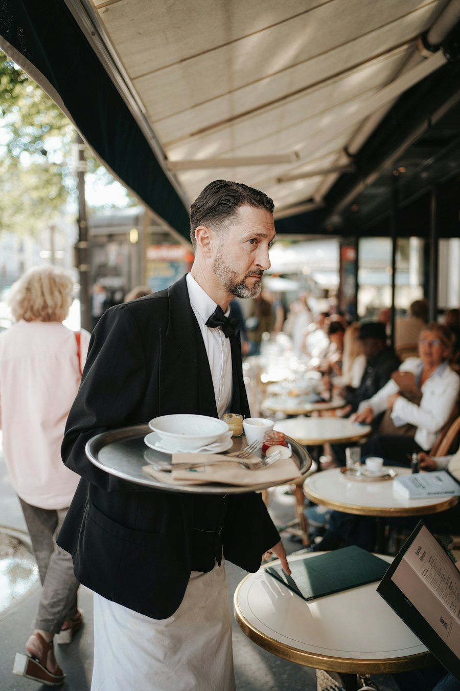
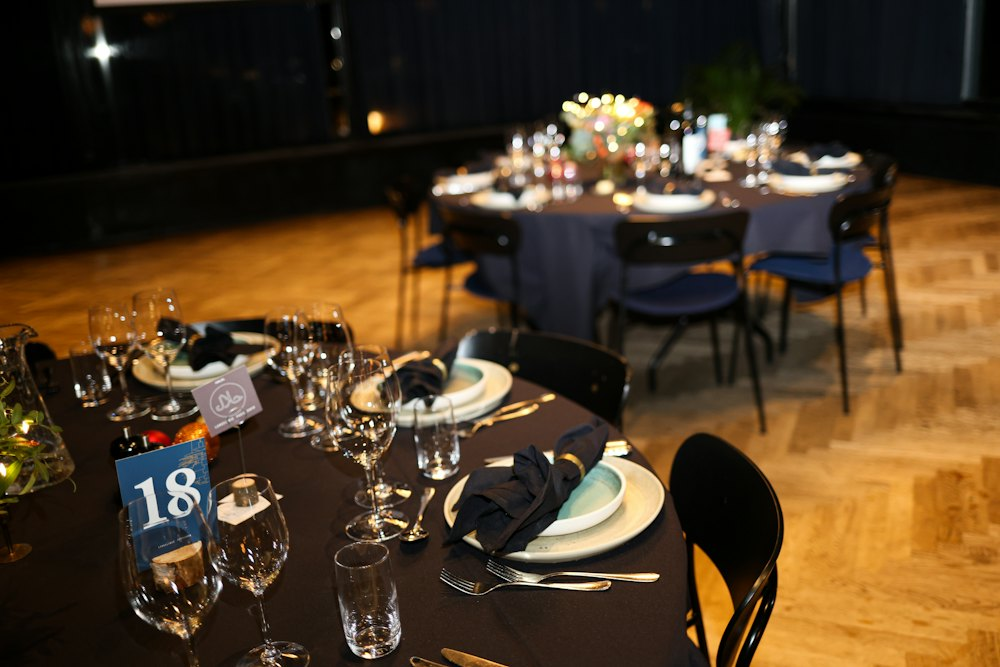
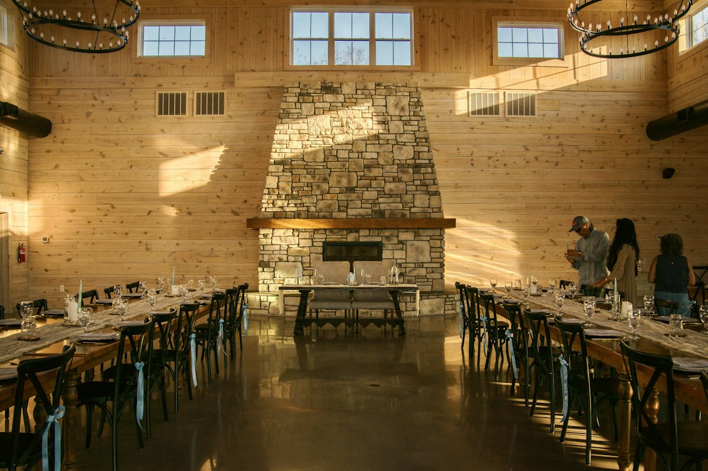

Kuchnia
- liczba osób i porcji
- menu, diety i alergie
- godziny serwisu, tort
BIFOR porządkuje cały proces organizacji wydarzenia. Manager, Zamawiający i zaproszone osoby pracują na jednej aktualnej wersji informacji — od pierwszych ustaleń aż do realizacji.
Utwórz wydarzenie. Manager dodaje wydarzenie i podstawowe informacje.
Kolejność jest dowolna — pracujecie nad tym, co jest gotowe do ustalenia.
E-maile, wiadomości, Excel, dokumenty i notatki często zawierają różne wersje informacji dotyczących tego samego wydarzenia. BIFOR zbiera je w jednym miejscu.
Jedno wydarzenie. Jedna aktualna wersja ustaleń.
Każdy obszar wydarzenia ma swoje miejsce. Możesz przechodzić między nimi swobodnie — BIFOR pokazuje, co jest gotowe, a czego jeszcze brakuje.
Lista gości, RSVP, import, diety i alergie.
Plan sali i rozmieszczenie gości.
Wybory zgodne z ofertą organizatora.
Atrakcje i dodatkowe usługi.
Aktualny przebieg wydarzenia.
Materiały i dokumenty wydarzenia.
Kosztorys i rozliczenia.
Gotowe informacje dla zespołów realizacyjnych.
A także: kontakty i usługodawcy, dekoracje, napoje i alkohole, tort i desery, noclegi, wiadomości i historia zmian oraz podsumowanie wydarzenia.
Rozpocznij z BIFOR →BIFOR wykorzystuje te same dane wszędzie tam, gdzie są potrzebne. Jeżeli zmienia się liczba gości, nie poprawiasz jej ręcznie w kilku plikach.
Mniej przepisywania. Mniej błędów.
Jedna aktualna wersja danych.
Zmień liczbę gości i zobacz, co się dzieje.
Każdy widzi to, czego potrzebuje. Wszyscy pracują na tych samych danych.
Informacje zebrane podczas przygotowań automatycznie tworzą dane potrzebne managerowi, kuchni, obsłudze, barowi i pozostałym zespołom.

BIFOR powstał na podstawie wieloletniego doświadczenia w organizacji wesel i przyjęć. Funkcje systemu wynikają z rzeczywistych procesów związanych z obsługą klienta, przygotowaniem wydarzenia i jego realizacją.


Wesela · komunie · chrzciny · jubileusze · urodziny · eventy firmowe · konferencje
Nie ma tu Twojego pytania? Napisz do nas w formularzu — odpowiemy.
Przejdź do formularza →BIFOR to oprogramowanie, które porządkuje cały proces ustaleń dotyczących wydarzenia w jednym miejscu.
Nie. BIFOR jest przeznaczony dla różnych organizatorów wydarzeń, w tym obiektów, restauracji, managerów, wedding plannerów i agencji eventowych.
Tak. Organizator może zaprosić klienta do konkretnego wydarzenia.
Nie. Zakres widoczności zależy od jego roli i uprawnień.
Tak. Usługodawca może otrzymać ograniczony dostęp do informacji potrzebnych do swojej pracy.
Tak. Organizacja może skonfigurować m.in. własne przestrzenie, menu, cenniki, pakiety, dodatki i zasady pracy.
BIFOR jest przygotowanym i testowanym oprogramowaniem gotowym do kolejnych wdrożeń.
Wypełnij formularz „Rozpocznij z BIFOR”. Skontaktujemy się w sprawie uruchomienia konta.
Prześlij podstawowe informacje. Skontaktujemy się z Tobą i przedstawimy sposób uruchomienia BIFOR w Twojej organizacji.